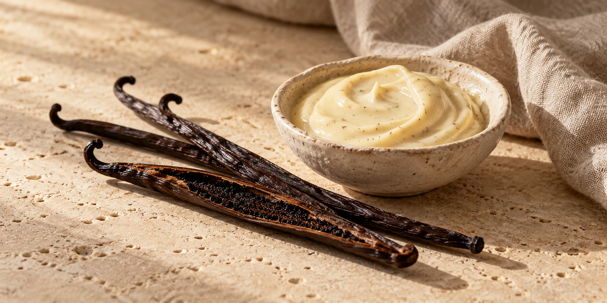
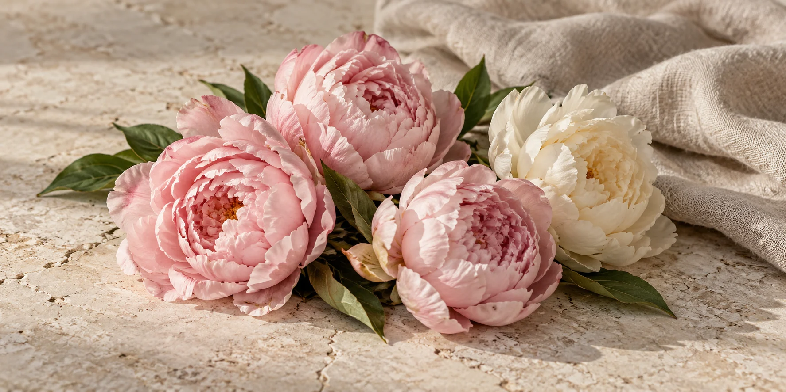
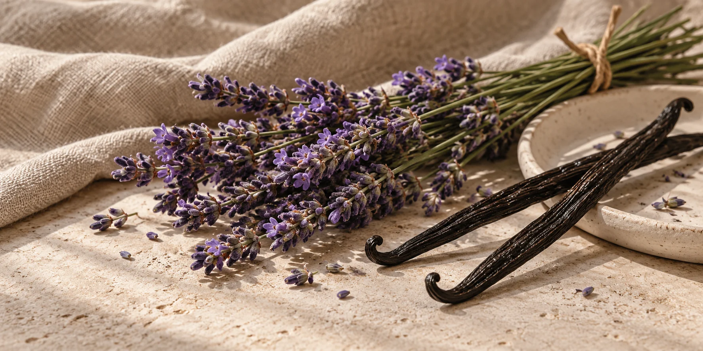
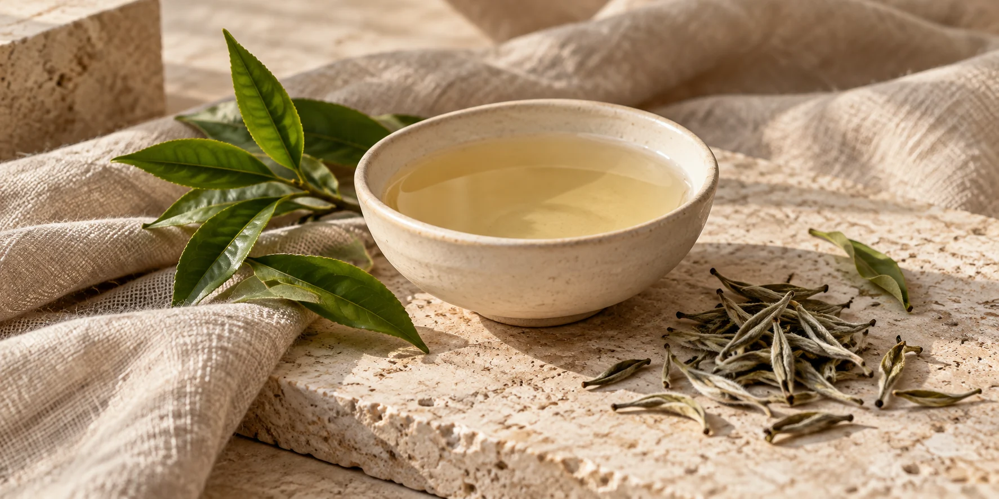
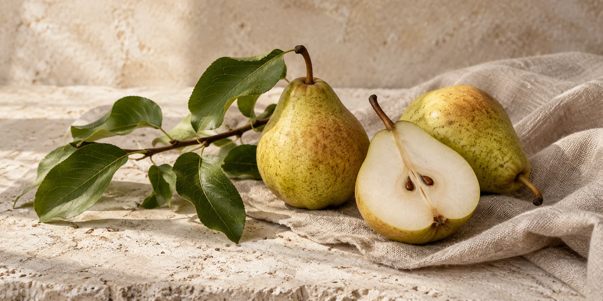
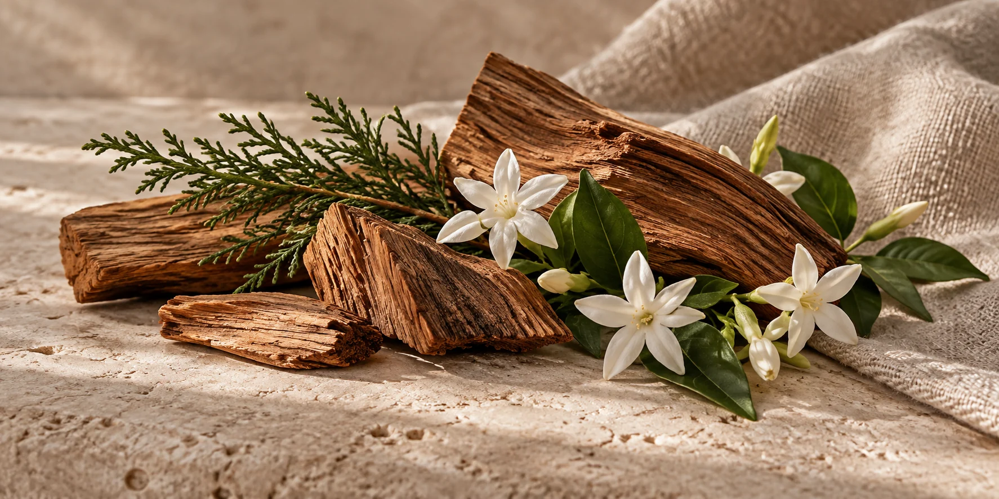
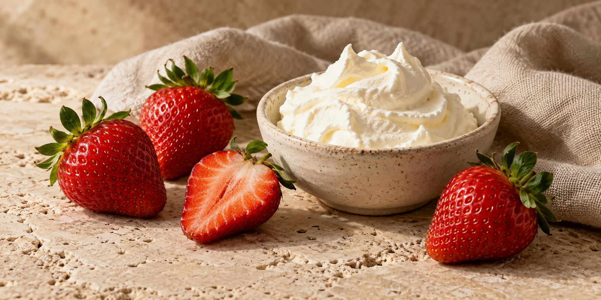
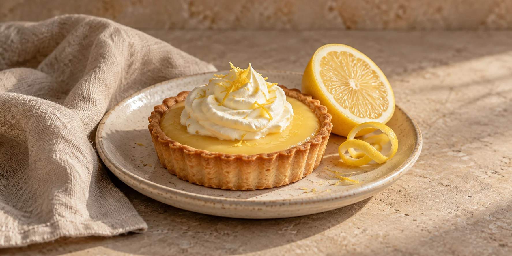
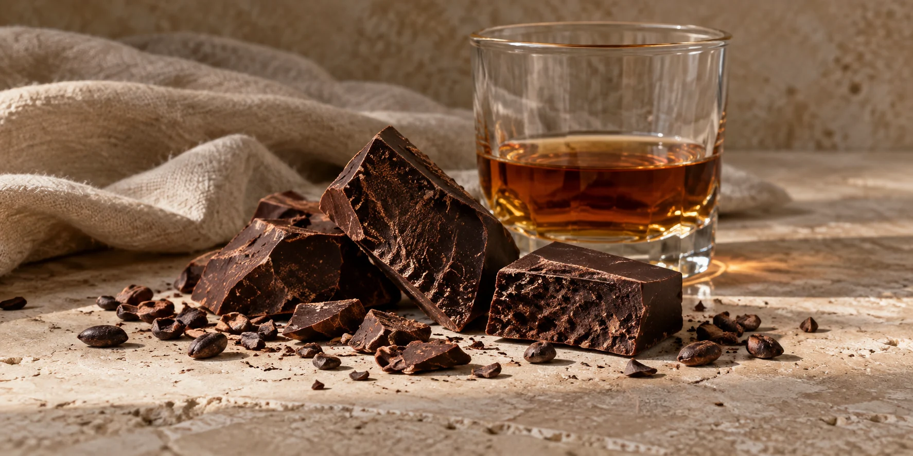
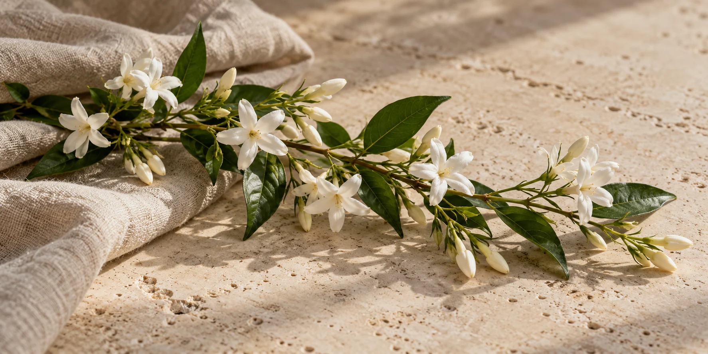

Baunilha Cremosa
DoceCremosoAconchego
A suavidade da baunilha na sua forma mais cremosa, que aquece o ambiente e o coração. Perfeita para compor momentos sem brigar por atenção.
Ver velasFlores, frutas, madeiras e sobremesas. Encontre o cheiro que combina com a sua casa — do frescor elegante ao aconchego de uma sobremesa.
11 aromas para descobrir

DoceCremosoAconchego
A suavidade da baunilha na sua forma mais cremosa, que aquece o ambiente e o coração. Perfeita para compor momentos sem brigar por atenção.
Ver velas
FloralDelicadoElegante
A elegância das peônias em uma fragrância floral e intensa, que transforma qualquer ambiente em um jardim de sensações.
Ver velas
FloralDoceAconchego
O frescor da lavanda em uma fragrância envolvente, que acalma a mente e convida a momentos de pausa.
Ver velas
FrescoLeveElegante
A delicadeza do chá branco em um aroma suave e sofisticado, que traz a sensação de calma e bem estar.
Ver velas
CítricoEspeciadoAconchego
A energia da tangerina com o toque quente da canela, em uma fragrância que traz conforto e boas lembranças.
Ver velas
FrutadoAmadeiradoFresco
Fresco e frutado, Pera Silvestre remete a um pomar de peras, com a presença natural das cascas e um delicado fundo amadeirado. Um aroma que traz o frescor da fruta e a sensação de estar perto da natureza.
Ver velas
AmadeiradoFloralMarcante
A inspiração da madeira encontra a presença floral do jasmim. Para quem gosta de uma composição de aroma mais marcante.
Ver velas
FrutadoDoceCremoso
A combinação que remete a uma sobremesa de morangos com chantilly. Uma escolha para quem gosta de aromas gourmand e de uma casa com cheiro de coisa boa.
Ver velas
CítricoDoceAconchego
Uma inspiração de confeitaria com o contraste entre o limão e a doçura da tortinha. Para quem gosta de sobremesas cítricas.
Ver velas
DoceIntensoAconchego
Uma inspiração intensa de chocolate com o toque de rum. Para quem gosta de aromas que remetem a sobremesas e combinações envolventes.
Ver velas
FloralEleganteMarcante
Uma inspiração centrada no jasmim, para quem gosta da presença dos florais. Explore essa opção nas lembranças de evento.
Ver velasExperimente outra palavra ou limpe os filtros para explorar a coleção.
Conte quais cheiros você gosta e em qual ambiente quer usar sua vela. A gente ajuda você a encontrar seu aroma.